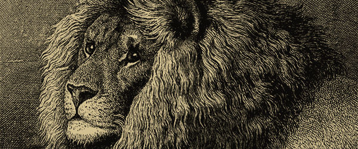

Till well on in the present century the title of "King of Beasts" was almost universally bestowed upon the lion by writers on natural history, on account of its generally majestic appearance, and the assumed nobility and fierceness of its character. Of late years, however, there has been a strong tendency on the part of those who have had the best opportunities of observing the animal in its native haunts, to depose the lion from the proud position it had so long occupied. The reason for this change of view appear to be that when roaming abroad by daylight the lion, as Mr. F. C. Selous, the well-known African hunter, informs us, does not carry his head so high up as he ought to do in order to be entitled to the epithet of majestic; while his disposition, instead of being noble and fearless, is considered by Livingstone and other writers to be more correctly described as cowardly and mean. Although it is impossible to doubt the accuracy of such observations as to it true character, yet the magnificent proportions of the animal, coupled with the splendid mane decorating the head and chest of the males, render the lion by far the most striking in appearance of the whole of the Cat tribe, and, indeed, of all the Carnivores.
The material located at this site is not endorsed, sponsored or provided by or on behalf of North Carolina State University. All photographs belong to Siyabona Africa (Pty) Ltd, courtesy of Kruger National Park. Information presented on this site was gathered from Africa Mammals Guide (courtesy of Kruger National Park), The Royal Natural History 1849-1915 (Lydekker), and Wikipedia's entry on the lion.